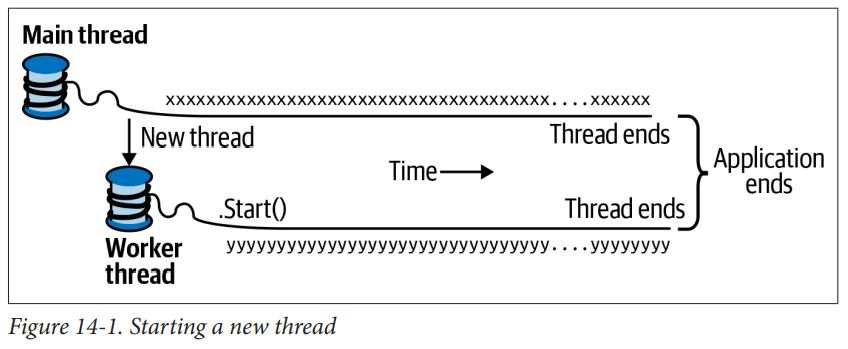

# 并发与异步
# 概述
最常见的并发场景包括：
- 编写快速响应的用户界面
- 处理同时出现的请求
- 并行编程
- 预测执行
这种程序同时执行代码的机制称为多线程。CLR 和操作系统都支持多线程，它是并发的概念基础。
# 线程
线程是一个可以独立执行的执行路径。
# 创建线程
客户端程序（控制台、WPF、UWP 或者 Windows Forms）再启动时都会从操作系统自动创建一个线程（主线程）。除非（直接或者间接地）手动创建多个线程，否则该应用程序就是一个单线程的应用程序。
要创建并启动一个线程，需要首先实例化 Thread 对象并调用 Start 方法。Thread 的最简单的构造器接受一个 ThreadStart 委托：一个无参数的方法，表示执行的起始位置。
// NB: All samples in this chapter assume the following namespace imports: | |
using System; | |
using System.Threading; | |
class ThreadTest | |
{ | |
static void Main() | |
{ | |
Thread t = new Thread (WriteY); // Kick off a new thread | |
t.Start(); // running WriteY() | |
// Simultaneously, do something on the main thread. | |
for (int i = 0; i < 1000; i++) Console.Write ("x"); | |
} | |
static void WriteY() | |
{ | |
for (int i = 0; i < 1000; i++) Console.Write ("y"); | |
} | |
} | |
// Typical Output: | |
xxxxxxxxxxxxxxxxyyyyyyyyyyyyyyyyyyyyyyyyyyyyyyyyyyyyy | |
xxxxxxxxxxxxxxxxxxxxxxxxxxxxxxxxxxxxxxxxyyyyyyyyyyyyy | |
yyyyyyyyyyyyyyyyyyyyyyyyyyyyyyyxxxxxxxxxxxxxxxxxxxxxx | |
xxxxxxxxxxxxxxxxxxxxxxyyyyyyyyyyyyyyyyyyyyyyyyyyyyyyy | |
yyyyyyyyyyyyyxxxxxxxxxxxxxxxxxxxxxxxxxxxxxxxxxxxxxxxx | |
... |
在单核计算机上，操作系统会为每一个线程划分时间片（Windows 系统的典型值为 20 毫秒）来模拟并发执行。因此上述代码会出现连续的 x 和 y。而在多核心的计算机上，两个线程可以并行执行（会和计算机上其他执行的进程进行竞争），因此虽然我们还是会得到连续的 x 和 y，但这却是由于 Console 处理并发请求的机制导致的。

线程是抢占式的。它的执行和其他线程的代码是交错执行的。
线程一旦启动，其 IsAlive 属性就会返回 true，直至线程停止。当 Thread 的构造函数接收的委托执行完毕后，线程就会停止。线程停止后就无法再启动了。
每一个线程都有一个 Name 属性用于调试用途。
# 汇合与休眠
调用 Thread 的 Join 方法可以等待其他线程结束：
static void Main() | |
{ | |
Thread t = new Thread (Go); | |
t.Start(); | |
t.Join(); | |
Console.WriteLine ("Thread t has ended!"); | |
} |
调用 Join 时可以指定一个超时时间（以毫秒为单位或者使用 TimeSpan 定义）。如果线程再指定时间内正常结束，则返回 true；如果超时则返回 false。
Thread.Sleep (0) 将会导致线程立即放弃自己的时间片，自觉地将 CPU 交于其他的线程。Thread.Yield () 执行相同的操作，但是它只会将资源交给同一个处理器上运行的线程。
如果在代码的任意位置插入 Thread.Yield () 导致程序失败，则代码一定存在缺陷。
在等待线程 Sleep 或者 Join 的过程中，线程是阻塞的。
# 阻塞
线程由于特定原因暂定执行，那么它就是阻塞的。阻塞的线程会立刻交出它的处理器时间片，并从此开始不再消耗处理器时间，直至阻塞条件结束。
当线程被阻塞或者接触阻塞时，操作系统就会进行一次上下文切换。这会导致细小的开销，一般在 1~2 微妙。
I/O 密集和计算密集
如果一个操作的绝大部分时间都在等待事件的发生，则称为 I/O 密集。I/O 密集操作一般都会涉及输入或者输出，但是这并非硬性要求。日入 Thread.Sleep 也是一种 I/O 密集的操作。相反，如果操作的大部分时间都用于执行大量的 CPU 操作，则称为计算密集。
阻塞和自旋
I/O 密集操作主要表现为以下两种形式：要么在当前线程同步进行等待，直至操作完成（例如 Console.ReadLine、Thread.Sleep 以及 Thread.Join）；要么异步进行操作，在操作完成的时候或者之后某个时刻触发回调函数。
同步的 I/O 密集操作大部分时间都花费在阻塞线程上，但是也可能在一个定期循环中自旋：
while (DateTime.Now < nextStartTime) | |
Thread.Sleep (100); |
虽然有更好的办法实现这种效果（例如使用定时器或者使用信号发送结构），但宁外一种选择是令线程持续性自旋：
while (DateTime.Now < nextStartTime); |
一般来说，上述做法非常浪费处理器时间。因为 CLR 和操作系统都会认为这个线程正在执行重要的运算，因此就会为其分配响应的资源。因此从效果上来说我们将一个 I/O 密集的操作转变成了一个计算密集型操作。
自选和阻塞有一些细微的差别。首先，非常短暂的自旋在条件可以很快得到满足的场景（例如几微妙）下是非常的高效的，因为它避免了上下文切换带来的延迟和开销。其次，阻塞并非零开销。这是因为每一个线程在存活时会占用 1MB 左右的内存，并对 CLR 和操作系统带来持续性的管理开销。因此，阻塞可能会给繁重的 I/O 密集型程序（例如要处理成百上千的并发操作）带来麻烦。这些程序更适于使用回调的方式，在等待时完全解除这些线程。
# 本地状态与共享状态
CLR 为每一个线程分配了独立的内存栈，从而保证了局部变量的隔离。
static void Main() | |
{ | |
new Thread (Go).Start(); // Call Go() on a new thread | |
Go(); // Call Go() on the main thread | |
} | |
static void Go() | |
{ | |
// Declare and use a local variable - 'cycles' | |
for (int cycles = 0; cycles < 5; cycles++) Console.Write ('?'); | |
} |
如果不同的线程拥有同一个对象的引用，则这些线程之间就共享了数据：
class ThreadTest | |
{ | |
bool _done; | |
static void Main() | |
{ | |
ThreadTest tt = new ThreadTest(); // Create a common instance | |
new Thread (tt.Go).Start(); | |
tt.Go(); | |
} | |
void Go() // Note that this is an instance method | |
{ | |
if (!_done) { _done = true; Console.WriteLine ("Done"); } | |
} | |
} |
编译器会将 Lambda 表达式捕获的局部变量或匿名委托转换为字段，因此它们也可以被共享：
static void Main() | |
{ | |
bool done = false; | |
ThreadStart action = () => | |
{ | |
if (!done) { done = true; Console.WriteLine ("Done"); } | |
}; | |
new Thread (action).Start(); | |
action(); | |
} |
上述语句的问题是，当一个线程在判断 if 语句的时候，另一个线程有可能在 done 设置为 true 前就已经开始执行 WriteLine 语句了。
上述例子展示了共享写状态可能引起间歇性错误，这也是多线程中经常被诟病的问题。下面将介绍如何通过锁机制来避免这种问题。然而，最好的方式时避免使用共享状态。稍后还将介绍如何通过异步编程的方式来解决这个问题。
# 锁与线程安全
在读写共享字段时首先获得一个排他锁可以修正之前示例的问题。使用 C# 的 lock 语句就可以实现这个目标：
class ThreadSafe | |
{ | |
static bool _done; | |
static readonly object _locker = new object(); | |
static void Main() | |
{ | |
new Thread (Go).Start(); | |
Go(); | |
} | |
static void Go() | |
{ | |
lock (_locker) | |
{ | |
if (!_done) { Console.WriteLine ("Done"); _done = true; } | |
} | |
} | |
} |
当两个线程同时竞争一个锁时（它可以是任意引用类型的对象，这里是_locker），一个线程会进行等待（阻塞），直到锁被释放。
即使是变量自增操作也并不是线程安全的：底层处理器也会采用独立的读 - 自增 - 写操作来执行 x++ 这种表达式。
锁并非保证线程安全的灵丹妙药，人们很容易忘记在访问字段时加锁，而且锁本身也存在一些问题（例如死锁）。
# 向线程传递数据
Thread 对象的重载构造器可以接受以下两种委托的任意一种。
public delegate void ThreadStart(); | |
public delegate void ParameterizedThreadStart (object obj); |
# 异常处理
线程执行和线程创建时所处的 try/catch/finally 语句块无关。
public static void Main() | |
{ | |
try | |
{ | |
new Thread (Go).Start(); | |
} | |
catch (Exception ex) | |
{ | |
// We'll never get here! | |
Console.WriteLine ("Exception!"); | |
} | |
} |
本例中的 try/catch 语句是无效的。新创建的线程会被未处理的 NullReference-Exception 异常影响。如果将每一个线程看作独立的执行路径，那么就可以理解上述行为了。
解决方法是将异常处理移到 Go 方法内：
public static void Main() | |
{ | |
new Thread (Go).Start(); | |
} | |
static void Go() | |
{ | |
try | |
{ | |
... | |
throw null; // The NullReferenceException will get caught below | |
... | |
} | |
catch (Exception ex) | |
{ | |
// Typically log the exception, and/or signal another thread | |
// that we've come unstuck | |
... | |
} | |
} |
# 前台线程与后台线程
一般情况下，显示创建的线程称为前台线程。只要有一个前台线程还在运行，应用程序就仍然保持运行状态。而后台线程则不然。当所有前台线程结束时，应用程序就会停止，且所有运行的后台线程也会随之终止。
线程的前台 / 后台状态和线程的优先级（执行时间的分配）无关。
可以使用线程的 IsBackground 属性来查询或修改线程的前后台状态：
static void Main (string[] args) | |
{ | |
Thread worker = new Thread ( () => Console.ReadLine() ); | |
if (args.Length > 0) worker.IsBackground = true; | |
worker.Start(); | |
} |
如果进程以上述方式终止，则后台程序执行栈上的任何 finally 语句块都无法执行。如果应用程序需要在 finally 或者 using 块中执行清理逻辑，例如删除临时文件，那么可以在应用程序结束时显式等待后台线程汇合或触发信号发送结构来避免上述问题。无论采用哪一种方法，都需要指定一个超时时间来抛弃哪些无法按时结束的问题线程。否则用户只能通过 “任务管理器”（UNIX 用户则通过 kill 命令）来终止应用程序了。
前台线程则不需要这样的处理，但是必须注意尽量避免出现线程无法结束的 bug。活跃的前台线程是导致应用程序无法正常退出的常见原因之一。
# 线程的优先级
# 信号发送
有时一个线程需要等待来自其他线程的通知，即所谓的信号发送。最简单的信号发送结构是 ManualResetEvent。调用 ManualResetEvent 的 WaitOne 方法可以阻塞当前线程，直到其他线程调用 Set “打开” 了信号。以下的示例启动了一个线程，并等待 ManualResetEvent。
var signal = new ManualResetEvent (false); | |
new Thread (() => | |
{ | |
Console.WriteLine ("Waiting for signal..."); | |
signal.WaitOne(); | |
signal.Dispose(); | |
Console.WriteLine ("Got signal!"); | |
}).Start(); | |
Thread.Sleep(2000); | |
signal.Set(); // "Open" the signal |
在 Set 调用后，信号发送结构仍然会保持 “打开” 状态，可以调用 Reset 方法再次将其 “关闭”。
# 富客户端应用程序的线程
如果想要在工作线程上更新 UI，就必须将请求发送给 UI 线程，这种技术称为封送（marshal）。实现该操作的底层方式有：
- 在 WPF 钟，调用元素的 Dispatcher 对象的 BeginInvoke 或 Invoke 方法。
- 在 UWP 应用钟，可以调用 Dispatcher 对象的 RunAsync 或 Invoke 方法。
- 在 Windows Forms 应用中：调用控件的 BeginInvoke 或 Invoke 方法。
使用 Invoke 可以从方法中直接得到返回值。如果不需要返回值，则可以使用 BeginInvoke/RunAsync，它们不会阻塞调用者，也不会造成死锁。
可以想象，当调用 Application.Run 时会执行如下的伪代码：
while (!thisApplication.Ended)
{
wait for something to appear in message queue
Got something: what kind of message is it?
Keyboard/mouse message -> fire an event handler
User BeginInvoke message -> execute delegate
User Invoke message -> execute delegate & post result
}
多个 UI 线程
UI 线程也可以有多个，但是每一个线程要对应不同的窗口。最有代表性的场景是一个应用程序有多个顶级窗口，通常称之为单文档界面（Single Document Interface，SDI）应用程序，例如 Microsoft Word。每一个 SDI 窗口通常在任务栏上将自己显示为独立的应用程序，且对比其他的 SDI 窗口在功能上完全独立。为每一个窗口指定独立的 UI 线程，可以使每一个窗口都有更好的独立响应能力。
# 同步上下文
System.ComponentModel 命名空间下有一个 SynchronizationContext 抽象类，它实现了一般性的线程封送功能。
# 线程池
每当启动一个线程，都需要一定的时间（几百微秒）来创建新的局部变量栈。而线程池通过预先创建一个可回收线程的池子来降低这个开销。线程池对开发高性能的并行程序与控制细粒度的并发都是非常必要的。它可以支持运行一些短暂的操作而不会收到线程启动开销的影响。
使用线程池中的线程时还需要考虑以下问题：
- 线程池中线程的 Name 属性是无法进行设置的，因此会增加代码调试的难度（但可以在调试时使用 Visual Studio 的 Threads 窗口附加一个描述信息）。
- 线程池中的线程都是后台线程。
- 阻塞线程池中的线程将影响性能。
我们可以任意设置线程池中线程的优先级，而当将线程归还线程池时其优先级会恢复为普通级别。
Thread.CurrentThread.IsThreadPoolThread 属性可用于确认当前运行的线程是否是一个线程池线程。
进入线程池
在线程池上运行代码的最简单方式是调用 Task.Run：
// Task is in System.Threading.Tasks | |
Task.Run(()=>Console.WriteLine("Hello from the thread pool")); |
.NET Framework4.0 之前没有 Task 类，因可以调用 ThreadPool.QueueUserWorkItem：
ThreadPool.QueueUserWorkItem(notUsed => Console.WriteLine("Hello")); |
以下使用场合均隐式使用了线程池：
- ASP.NET Core 和 Web API 应用服务
- System.Timers.Timer 和 System.Threading.Timer
- 第 23 章中介绍的并行编程结构
- BackgroundWorker 类（已弃用）
线程池的整洁性
线程池还有另外一个功能，那就是保证临时性的计算密集作业不会导致 CPU 超负荷。所谓超负荷指激活的线程数目多于 CPU 核心数量，导致操作系统必须按时间片执行线程调度。超负荷会影响性能，因为划分时间片需要大量的上下文切换开销，并可能使 CPU 的缓存失效。而这些都是现代处理器实现高性能的必要条件。
CLR 通过将任务进行排队，并控制任务启动数量来皮面线程池超负荷。它首先运行与硬件核心数量相同的并发任务，然后通过爬山算法调整并发数量，在一个方向上不停地调整工作负载。如果吞吐量有所改善，它就维持这个方向（反之则调换到另一个方向）。哪怕计算机上有多个进程活动，它仍能够运行在最优性能曲线上。
如果满足以下两个条件，则 CLR 的策略将得到最好的效果：
- 大多数工作项的运行时间非常短暂（小于 250 毫秒或者理想情况下小于 100 毫秒）。这样 CLR 就会有大量的机会进行测量和调整。
- 线程池中不会出现大量以阻塞为主的作业。
阻塞是非常麻烦的。因为它会让 CLR 错误地认为它占用了大量的 CPU。CLR 会检测并进行补偿（向线程池中注入更多的线程），但这可能使线程池受到后续超负荷的影响。此外，由于 CLR 会限制注入新线程的速度，因此这也会增加延迟，特别是应用程序生命周期的前期（在客户端操作系统上更加严重，因为在客户端操作系统需要更低的资源消耗）。
因此，如果希望尽可能提高 CPU 的利用率，则请务必保持线程池的整洁性。
# 任务
线程是创建并发的底层工具，因此它有一定的局限性。特别是：
- 虽然在线程启动时不难向其中传递数据，但是当线程 Join 后却难以从中得到 “返回值”。通常不得不创建一些共享字段（来得到 “返回值”）。此外，捕获和处理线程中操作抛出的异常也是非常麻烦的。
- 在线程完成后，就无法再次启动它，相反只能够将其 Join（并阻塞当前操作线程）。
这些局限性会影响颗粒度并发性的实现。换言之，这种方式难以将小的并发组合成大的并发操作（这对于异步编程而言非常重要），并会增加手动同步处理（例如使用锁、信号发送等）的依赖，而且很容易造成问题。
Task 类可以解决所有这些问题。与线程相比，Task 是一个更高级的抽象概念，它代表了一个并发操作，而该操作并不一定以带线程完成。Task 是可以组合的（可以将它们通过延续（continuation）操作串联在一起）。我们可以使用线程池减少启动延迟，也可以通过 TaskCompletionSource 采用回调的方式避免多个线程同时等待 I/O 密集型操作。
Task 类是 Framework4.0 时作为并行编程库的组成部分引入的。然而它们后来经历了许多改进（通过使用等待器（awaiter）），从而在常见的并发场景中发挥了越来越大的作用。Task 类也是 C# 异步功能的基础类型。
# 启动任务
启动一个基于线程的 Task 的最简单方式是使用 Task.Run（Task 类位于 System.Threading.Tasks 命名空间）静态方法。调用时只需传入一个 Action 委托：
Task.Run(()=>Console.WriteLine("Foo")); |
任务默认使用线程池中的线程（它们都是后台线程）。这意味着当主线程结束时，所有的任务也会随之停止。因此，要在控制台应用程序中运行这些例子，必须在启动任务后阻塞主线程（例如在任务对象上调用 Wait，或者调用 Console.WriteLine 方法）：
static void Main() | |
{ | |
Task.Run (() => Console.WriteLine ("Foo")); | |
Console.ReadLine(); | |
} |
采用这种方式调用 Task.Run 的效果与限免启动线程的方式很相似（唯一的不同是没有隐式使用线程池）：
new Thread (() => Console.WriteLine ("Foo")).Start(); |
Task.Run 会返回一个 Task 对象，它可以用于监控任务的执行过程。这一点与 Thread 对象不同（注意，我们没有在 Task.Run 之后调用 Start，因为 Task.Run 创建的任务是 “热” 任务；相反，如果要创建 “冷” 任务，则必须调用 Task 的构造器，但是这种方式在实践中很少见到。
Wait 方法
调用 Task 的 Wait 方法可以阻塞当前方法，直到任务完成，这和调用线程对象的 Join 方法类似：
Task task = Task.Run (() => | |
{ | |
Thread.Sleep (2000); | |
Console.WriteLine ("Foo"); | |
}); | |
Console.WriteLine (task.IsCompleted); // False | |
task.Wait(); // Blocks until task is complete |
可以在 Wait 中指定一个超时时间和取消令牌（可选）来提前终止等待状态。
长任务
默认情况下，CLR 会将任务运行在线程池线程上，这种线程非常适合执行短小的计算密集的任务。如果要执行长时间阻塞的操作，则可以按照以下方式避免使用线程池线程：
Task task = Task.Factory.StartNew (() => ..., | |
TaskCreationOptions.LongRunning); |
在线程池上运行一个长时间执行的任务并不会造成问题；但是如果要并行运行多个长时间运行的任务（特别是会造成阻塞的任务），则会对性能造成影响。在这种情况下，相比于使用 TaskCreationOptions.LongRunning 而言，更好的方案是：
- 如果运行的是 I/O 密集型任务，则使用 TaskCompletionSource 和异步函数通过回调函数而非使用线程实现并发性。
- 如果任务是计算密集型，则使用生产者 / 消费者队列可以控制这些任务造成的并发数量，避免出现线程和进程饥饿问题。
# 返回值
Task 有一个泛型子类 Task<TResult>，它允许任务返回一个值。如果在调用 Task.Run 时传入一个 Func<TResult > 委托（或者兼容的 Lambda 表达式）替代 Action 就可以获得一个 Task<TResult > 对象：
Task<int> task = Task.Run (() => { Console.WriteLine ("Foo"); return 3; }); | |
// ... |
此后，通过查询 Result 属性就可以获得任务的返回值。如果当前任务还没有执行完毕，调用该属性会阻塞当前线程，直到任务结束。
int result = task.Result; // Blocks if not already finished | |
Console.WriteLine (result); // 3 |
Task<int> primeNumberTask = Task.Run (() => | |
Enumerable.Range (2, 3000000).Count (n => | |
Enumerable.Range (2, (int)Math.Sqrt(n)-1).All (i => n % i > 0))); | |
Console.WriteLine ("Task running..."); | |
Console.WriteLine ("The answer is " + primeNumberTask.Result); |
可以将 Task<TResult> 理解为一个 “未来值”，它封装了 Result 并将在以后生效。
# 异常
任务可以方便地传播异常，这和线程是截然不同的。因此，如果任务中的代码抛出一个未处理异常（换言之，如果任务出错），那么调用 Wait () 或者访问 Task<TResult> 的 Result 属性时，该异常就会被重新抛出：
// Start a Task that throws a NullReferenceException: | |
Task task = Task.Run (() => { throw null; }); | |
try | |
{ | |
task.Wait(); | |
} | |
catch (AggregateException aex) | |
{ | |
if (aex.InnerException is NullReferenceException) | |
Console.WriteLine ("Null!"); | |
else | |
throw; | |
} |
(为了适应并行编程场景，CLR 会将异常包装为一个 AggregateException)
使用 Task 的 IsFaulted 和 IsCanceled 属性可以在不抛出异常的情况下检测出错的任务。如果两个属性都返回了 false，则说明没有错误发生；如果 IsCanceled 为 true，则说明任务抛出了 OperationCanceledException；如果 IsFaulted 为 true，则说明任务抛出了其他类型的异常，通过 Exception 属性可以了解该异常的信息。
异常和自治任务
自治任务指那些可以 “运行并忘记” 的任务（这些任务不需要调用 Wait () 或访问其 Result 属性，也不需要进行任务的延续）。对于自治任务，最好在任务代码中显式声明异常处理代码，防止出现和线程类似的难以察觉的错误。
如果异常仅导致无法获得一些不重要的结果，那么忽略异常是最好的方式。
如果异常反应了程序的重大缺陷，就绝不能忽略异常。
使用静态时间 TaskScheduler.UnobservedTaskException 可以在全局范围订阅未观测的异常。处理这个事件并将错误记录在日志中，是一个有效的处理异常的方式。
未观测异常之间也存在一些细微的差异：
- 如果在等待任务时设置了超时时间，则在超时时间后发生的错误将产生未观测异常。
- 在错误发生后，如果检查任务的 Exception 属性，则该异常就成了已观测到的异常。
# 延续
延续会告知任务在完全后继续执行后续的操作。延续通常由回调方法实现操作完成后执行。给任务附加延续的方法有两种。第一种方法尤其重要，因为 C# 的异步功能正是使用了这种方法。
Task<int> primeNumberTask = Task.Run (() => | |
Enumerable.Range (2, 3000000).Count (n => | |
Enumerable.Range (2, (int)Math.Sqrt(n)-1).All (i => n % i > 0))); | |
var awaiter = primeNumberTask.GetAwaiter(); | |
awaiter.OnCompleted (() => | |
{ | |
int result = awaiter.GetResult(); | |
Console.WriteLine (result); // Writes result | |
}); |
调用任务的 GetAwaiter 方法将返回一个 awaiter 对象。这个对象的 OnCompleted 方法告直先导任务（primeNumberTask）当它执行完毕（或者出现错误）时调用一个委托。将延续附加到一个已执行完毕的任务上是完全没有问题的，此时，延续的逻辑将会立即执行。
等待器（awaiter）可以是任意暴露了 OnCompleted 和 GetResult 方法以及 IsCompleted 属性的对象。它不需要特定的接口或者继承特定基类来同一这些成员。
如果先导任务出现错误，则延续代码调用 awaiter.GetResult () 时会重新抛出异常。当然也可以访问先导任务的 result 属性而不是调用 GetResult 方法。但如果先导任务失败，调用 GetResult 方法就可以直接得到原始的异常，而不是包装后的 Aggregate-Exception。
对于非泛型任务，GetResult 的返回值为 void，这个函数的用途完全是为了重新抛出异常。
如果提供了同步上下文，则 OnCompleted 就会自动捕获它，并将延续提交到这个上下文中。如果不希望这么做，可以使用 ConfigureAwait 方法来避免这种行为：
var awaiter = primeNumberTask.ConfigureAwait (false).GetAwaiter(); |
如果并未提供任何同步上下文，或者调用了 COnfigureAwait (false)，延续代码一般会运行在先导任务运行的线程上，从而避免不必要的开销。
另一种附加延续的方式是调用任务对象的 ContinueWith 方法：
primeNumberTask.ContinueWith (antecedent => | |
{ | |
int result = antecedent.Result; | |
Console.WriteLine (result); // Writes 123 | |
}); |
ContinueWith 方法本身会返回一个 Task 对象，因此它非常适用于添加更多的延续。然而，如果任务出现错误，我们必须直接处理 AggregateException；如果需要将延续封送到 UI 应用程序上还需要书写额外的代码。而在非 UI 上下文中，若希望延续任务和先导任务执行在同一个线程上，还需要指定 TaskContinuationOptions.ExecuteSynchronously。否则，它就会去请求线程池。ContinueWith 更适用于并行编程场景。
# TaskCompletionSource 类
前面介绍了如何使用 Task.Run 创建一个任务，并在线程池线程（或者非线程池线程）上运行特定委托。而另一种创建任务的方法是使用 TaskCompletionSource。
它不但可以利用任务的所有优点（能够传递返回值、异常或延续），而且不需要在操作执行期间阻塞线程。
public class TaskCompletionSource<TResult> | |
{ | |
public void SetResult (TResult result); | |
public void SetException (Exception exception); | |
public void SetCanceled(); | |
public bool TrySetResult (TResult result); | |
public bool TrySetException (Exception exception); | |
public bool TrySetCanceled(); | |
public bool TrySetCanceled (CancellationToken cancellationToken); | |
... | |
} |
下面的例子会在等待 5 秒钟后输出 42：
var tcs = new TaskCompletionSource<int>(); | |
new Thread (() => { Thread.Sleep (5000); tcs.SetResult (42); }) | |
{ IsBackground = true } | |
.Start(); | |
Task<int> task = tcs.Task; // Our "slave" task. | |
Console.WriteLine (task.Result); // 42 |
使用 TaskCompletionSource，我们就可以编写自己的 Run 方法了：
Task<TResult> Run<TResult> (Func<TResult> function) | |
{ | |
var tcs = new TaskCompletionSource<TResult>(); | |
new Thread (() => | |
{ | |
try { tcs.SetResult (function()); } | |
catch (Exception ex) { tcs.SetException (ex); } | |
}).Start(); | |
return tcs.Task; | |
} | |
... | |
Task<int> task = Run (() => { Thread.Sleep (5000); return 42; }); |
调用该方法和调用 Task.Factory.StartNew 并传递 TaskCreationOptions.LongRunning 参数是等价的。它们都会请求一个非线程池线程。
TaskCompletionSource 的真正作用是创建不绑定线程的任务。我们可以使用 Timer 类，由 CLR（进而由操作系统）在 x 毫秒后触发一个事件，而无需使用线程：
Task<int> GetAnswerToLife() | |
{ | |
var tcs = new TaskCompletionSource<int>(); | |
// Create a timer that fires once in 5000 ms: | |
var timer = new System.Timers.Timer (5000) { AutoReset = false }; | |
timer.Elapsed += delegate { timer.Dispose(); tcs.SetResult (42); }; | |
timer.Start(); | |
return tcs.Task; | |
} |
以上代码会返回一个在 5 秒钟后完成的任务，其结果为 42。通过给任务附加延续，就可以在不阻塞任何线程的情况下打印出这个结果：
var awaiter = GetAnswerToLife().GetAwaiter(); | |
awaiter.OnCompleted (() => Console.WriteLine (awaiter.GetResult())); |
TaskCompletionSource 不需要使用线程，意味着只有当延续启动时（5 秒钟后）才会创建线程。
如果请求的速度超过了处理的速度，那么线程池就会进行排队，并以最优的 CPU 并行原则处理这些请求。这种方法最适合处理执行时间短暂的线程密集的作业，而本例正符合这个特点。
# Task.Delay 方法
Delay 实际上也是 Task 类的一个静态方法：
Task.Delay (5000).GetAwaiter().OnCompleted (() => Console.WriteLine (42)); | |
// or: | |
Task.Delay (5000).ContinueWith (ant => Console.WriteLine (42)); |
Task.Delay 是 Thread.Sleep 的异步版本。
# 异步原则
# 同步操作与异步操作
同步操作先完成其工作再返回调用者。
异步操作的大部分工作则是再返回给调用者之后完成的。
我们平时编写和调用的大多数方法都是同步方法，而异步方法则并不常见，并且异步调用需要并发创建，因为其工作对于调用者来说是并行的。异步方法通常都会非常迅速（甚至会立即）返回给调用者，因此它们也称为非阻塞方法。
到目前为止，我们学习的异步方法都是通用方法：
- Thread.Start
- Task.Run
- 给任务附加延续的方法
# 什么是异步编程
异步编程的原则是以异步的方式编写运行时间很长（或者可能很长）的函数。这和编写长时间运行的函数的传统同步方法正好相反。它会在新的线程或者任务上调用这些函数，从而实现所需的并发性。
异步方法的不同点在于并发性是在长时间运行的方法内启动的，而不是从这个方法外启动的。这样做有两个优点：
- I/O 密集的并发性的实现不需要绑定线程，因此可以提高可伸缩性和效率。
- 富客户端应用程序可以减少工作线程的代码，因此可以简化线程安全性的实现。
在传统的同步调用图中，如果出现一个运行时间很长的操作，就必须将整个调用图转移到一个工作线程中以保持 UI 的响应性。因此，最终会得到一个跨越很多方法的并发操作（细粒度并发性），此时需要考虑途中每一个方法的线程安全性。
使用异步调用图，就可以在真正需要的时候再启动线程。这种方式产生细粒度的并发性，即由一系列小的并发操作组成，而在这些操作之间可插入 UI 线程的执行过程。
为了利用这一点，I/O 和计算密集型操作都应当采用异步方式实现。常用的经验法则是任何超过 50 毫秒的响应都用异步的方式处理。
# 异步编程与延续
任务非常适合进行异步编程，因为它支持延续，这对异步性是非常必要的。
# C# 的异步函数
async 和 await 关键字令我们用同步的代码风格编写异步代码，极大地去除了异步编程的复杂性。
# 等待
await 关键字可以简单地附加延续。
var result = await expression; | |
statement(s); |
编译器会将上述代码转换为下面具有相同功能的代码：
var awaiter = expression.GetAwaiter(); | |
awaiter.OnCompleted (() => | |
{ | |
var result = awaiter.GetResult(); | |
statement(s); | |
}); |
我们再来回顾一下前面用于计算素数个数的异步方法：
Task<int> GetPrimesCountAsync (int start, int count) | |
{ | |
return Task.Run (() => | |
ParallelEnumerable.Range (start, count).Count (n => | |
Enumerable.Range (2, (int)Math.Sqrt(n)-1).All (i => n % i > 0))); | |
} |
使用 await 关键字，就可以调用该方法了：
int result = await GetPrimesCountAsync (2, 1000000); | |
Console.WriteLine (result); |
为了完成编译，必须在上述代码所在方法上添加 async 修饰符：
async void DisplayPrimesCount() | |
{ | |
int result = await GetPrimesCountAsync (2, 1000000); | |
Console.WriteLine (result); | |
} |
async 修饰符只支持返回类型为 void 以及 Task 或 Task<TResult> 的方法（或 Lambda 表达式）。
async 修饰符和 unsafe 修饰符类似，都不会对方法签名或者公共元数据产生影响。它只影响方法内部的实现细节，因此再接口上添加 async 是没有意义的。但是这种方式也是合法的。
添加了 async 修饰符的方法称为异步函数，因为通常它们本身也是异步的。
当遇到 await 表达式时，通常情况下执行过程会返回到调用者上，就像是迭代器中的 yield return 一样。但是，运行时再返回之前会在等待的任务上附加一个延续，保证任务结束时执行点会跳回到方法中，并继续执行剩余的代码。如果任务出错，则会重新抛出异常；如果顺利结束，则用返回值为 await 表达式赋值。
awaiter 等待的表达式通常情况下是一个任务。但实际上，只要该对象拥有 GetAwaiter 方法，且该方法的返回值为等待器（这个对象需要实现 INotifyCompletion.Oncompleted 方法，具有返回恰当类型的 GetResult 方法和一个 bool 类型的 IsCompleted 属性），则编译器都可以接受。
注意，上例的 await 表达式返回一个 int 值。因为该表达式的类型为 Task<int>（其 GetAwaiter ().GetResult () 方法返回值为 int）。
等待非泛型的任务也是合法的，它会生成一个 void 表达式：
await Task.Delay (5000); | |
Console.WriteLine ("Five seconds passed!"); |
获取本地状态
await 表达式的最大优势在于它几乎可以出现在代码的任意位置。具体来讲，await 表达式可以在任何（异步函数的）表达式中出现，但不能出现在 lock 表达式或者 unsafe 上下文中。
UI 上的等待处理
与粗粒度并发的比较
# 编写异步函数
要编写异步函数，可将返回类型由 void 更改为 Task。这样方法本身就可以进行异步调用（并且是可等待的）。
async Task PrintAnswerToLife() // We can return Task instead of void | |
{ | |
await Task.Delay (5000); | |
int answer = 21 * 2; | |
Console.WriteLine (answer); | |
} |
需要注意的是方法体内并不需要显示返回一个任务。编译器会负责生成 Task，并在方法完成之前或出现未处理的异常时触发 Task。这样就很容易创建异步调用链：
async Task Go() | |
{ | |
await PrintAnswerToLife(); | |
Console.WriteLine ("Done"); | |
} |
编译器会展开异步函数，将任务对象返回，并使用 TaskCompletionSource 创建一个新的任务对象。
除了这些细微的区别外，我们还可以将 PrintAnswerToLife 方法展开为如下的功能等价实现：
Task PrintAnswerToLife() | |
{ | |
var tcs = new TaskCompletionSource<object>(); | |
var awaiter = Task.Delay (5000).GetAwaiter(); | |
awaiter.OnCompleted (() => | |
{ | |
try | |
{ | |
awaiter.GetResult(); // Re-throw any exceptions | |
int answer = 21 * 2; | |
Console.WriteLine (answer); | |
tcs.SetResult (null); | |
} | |
catch (Exception ex) { tcs.SetException (ex); } | |
}); | |
return tcs.Task; | |
} |
在富客户端场景下，若执行点并没有在 UI 线程上，则它会返回 UI 线程。在其他场景下，它会继续在延续所有的线程上运行。因此，不同于 UI 线程初始化后的初次回弹，第二种情况下跳出异步调用图不会发生任何延迟开销。
返回 Task<TResult>
异步函数中若方法体返回 TResult，则函数的返回值为 Task<TResult>：
async Task<int> GetAnswerToLife() | |
{ | |
await Task.Delay (5000); | |
int answer = 21 * 2; | |
return answer; // Method has return type Task<int> we return int | |
} |
在实现内部，这段代码在激活 TaskCompletionSource 时会传递一个值而不是 null。
async Task Go() | |
{ | |
await PrintAnswerToLife(); | |
Console.WriteLine ("Done"); | |
} | |
async Task PrintAnswerToLife() | |
{ | |
int answer = await GetAnswerToLife(); | |
Console.WriteLine (answer); | |
} | |
async Task<int> GetAnswerToLife() | |
{ | |
await Task.Delay (5000); | |
int answer = 21 * 2; | |
return answer; | |
} |
使用 C# 异步函数进行程序设计的基本原则：
- 首先以同步方法实现方法。
- 其次，将同步方法调用改为异步方法调用，并使用 await。
- 除 “最顶层级” 的方法（通常是 UI 控件事件处理器）外，将异步方法的返回类型修改为 Task 或者 Task<TResult>，使其成为可等待的方法。
由于编译器能够为异步函数创建任务，因此，除非要进行 I/O 密集并发的底层编程（这种情形是比较少见的），一般情况下无需显式实例化 TaskCompletionSource 类型。对于计算密集型的并发方法，则可以使用 Task.Run 创建任务。
执行异步调用图
async Task Go() | |
{ | |
var task = PrintAnswerToLife(); | |
await task; Console.WriteLine ("Done"); | |
} | |
async Task PrintAnswerToLife() | |
{ | |
var task = GetAnswerToLife(); | |
int answer = await task; Console.WriteLine (answer); | |
} | |
async Task<int> GetAnswerToLife() | |
{ | |
var task = Task.Delay (5000); | |
await task; int answer = 21 * 2; return answer; | |
} |
由于和同步调用采用了同一种模式，因此整个执行流和之前的同步调用图是完全匹配的。我们在每一个异步方法调用后都会立即 await，这样就形成了一个无并发（无重叠执行）的调用图。每一个 await 表达式都在执行过程中形成了一个 “缺口”，而之后的程序都可以在缺口处恢复执行。
并行性
调用异步方法但不等待就可以令异步方法和后续代码并行执行。
也可以使用相同的法则以并行方式执行两个异步操作：
var task1 = PrintAnswerToLife(); | |
var task2 = PrintAnswerToLife(); | |
await task1; await task2; |
通过 await 两个任务结束并行执行。后续将会介绍如何使用 WhenAll 任务组合器来优化这个模式。
在伪并发操作下，唯一能够抢占的位置就是 await 语句。这就使得我们可以定义一个共享字段_x，并在 GetAnswerToLife 中无须任何锁保护就能够对其进行自增操作：
async Task<int> GetAnswerToLife() | |
{ | |
_x++; | |
await Task.Delay (5000); | |
return 21 * 2; | |
} |
但是我们无法假定_x 在 await 前后均保持相同的值。
# 异步 Lambda 表达式
一般的具备名称的方法都可以成为异步方法：
async Task NamedMethod() | |
{ | |
await Task.Delay (1000); | |
Console.WriteLine ("Foo"); | |
} |
而只要添加了 async 关键字，匿名的方法（Lambda 表达式及匿名方法）也可以异步执行：
Func<Task> unnamed = async () => | |
{ | |
await Task.Delay (1000); | |
Console.WriteLine ("Foo"); | |
}; |
它们可以采用相同的方式进行调用和等待：
await NamedMethod(); | |
await unnamed(); |
异步 Lambda 表达式可以附加到事件处理器：
myButton.Click += async (sender, args) => | |
{ | |
await Task.Delay (1000); | |
myButton.Content = "Done"; | |
}; |
异步的 Lambda 表达式也可以返回 Task<TResult>：
Func<Task<int>> unnamed = async () => | |
{ | |
await Task.Delay (1000); | |
return 123; | |
}; | |
int answer = await unnamed(); |
# 异步流（C# 8）
在 C# 8 之前，我们可以使用 yield return 实现迭代器，也可以用 await 书写异步函数。但是无法将两者结合，实现一个可以等待的迭代器，即一种异步生成元素的方法。C# 8 引入异步流解决了这个问题。
# WinRT 中的异步方法
# 异步与同步上下文
# 优化
# 异步模式
# 取消操作
通常，并发操作在启动后必须能够取消（可能是出于用户的请求）。使用取消标志即可以轻松实现这个功能。例如，可以将该功能封装为以下类：
class CancellationToken | |
{ | |
public bool IsCancellationRequested { get; private set; } | |
public void Cancel() { IsCancellationRequested = true; } | |
public void ThrowIfCancellationRequested() | |
{ | |
if (IsCancellationRequested) | |
throw new OperationCanceledException(); | |
} | |
} |
然后，再按照下面的方式编写一个可取消的异步方法：
async Task Foo (CancellationToken cancellationToken) | |
{ | |
for (int i = 0; i < 10; i++) | |
{ | |
Console.WriteLine (i); | |
await Task.Delay (1000); | |
cancellationToken.ThrowIfCancellationRequested(); | |
} | |
} |
将取消令牌传递给 Foo 方法后，调用者只需调用取消令牌上的 Cancel 方法即可。该方法将 IsCancellationRequested 设置为 true。Foo 随后会因此而失败，并抛出 Operation-CanceledException（该异常正是为这种情形而设计的，它定义于 System 命名空间中）。
这种模式在不考虑线程安全性（需要在读 / 写 IsCancellationRequested 时添加锁操作）时是很高效的。CLR 提供了一个实现类似功能的类型 CancellationToken。然而 Cancel 方法却未定义在 CancellationToken 类上，而是定义在了另一个 CancellationTokenSource 类上。这种分离具有一定的安全性：即只能通过 CancellationToken 对象的方法检查取消操作，而不能启动取消操作。
要获得一个取消令牌，首先要实例化一个 CancellationTokenSource：
var cancelSource = new CancellationTokenSource(); |
它有一个 Token 属性，可以返回一个 CancellationToken。因此，可以按照以下方式调用 Foo 方法：
var cancelSource = new CancellationTokenSource(); | |
Task foo = Foo (cancelSource.Token); | |
... | |
... (some time later) | |
cancelSource.Cancel(); |
在 CLR 中，大部分异步方法都支持取消令牌，其中包括 Delay。如果修改 Foo，使其将令牌传递到 Delay 方法中，那么请求到达后任务会马上停止（而不会等到一秒钟以后）：
async Task Foo (CancellationToken cancellationToken) | |
{ | |
for (int i = 0; i < 10; i++) | |
{ | |
Console.WriteLine (i); | |
await Task.Delay (1000, cancellationToken); | |
} | |
} |
注意，我们无须调用 ThrowIfCancellationRequested 方法，因为 Task.Delay 方法中已经包含了该操作。取消令牌会顺利地沿着调用栈向下进行传递（就像取消请求会通过异常的方式沿着调用栈向上级联传播一样）。
# 进度报告
CLR 拥有一对专门针对进度报告的类型：IProgress<T> 接口和 Progress<T > 类（实现了 IProgress<T > 接口）。它们作用是包装一个委托，以便使 UI 应用程序可以通过同步上下文安全地报告进度。
# 基于任务的异步模式
.NET Core 提供了大量的返回任务的异步方法，因此它们都可以 await（主要和 I/O 相关）。大部分方法采用了一种基于任务的异步模式（Task-based Asynchronous Pattern，TAP），该模式是到目前为止最合理的一种方式。一个 TAP 方法：
- 返回一个 “热”（正在运行中的）Task 或者 Task<TResult>。
- 拥有 Async 后缀（除非是一些特殊情况，例如任务组合器）。
- 若支持取消操作或进度报告，则需要拥有接受 CancellationToken 或者 IProgress<T> 的重载。
- 快速返回调用者（初始同步阶段非常短小）。
- 对于 I/O 密集型任务不绑定线程。
如前面所述，TAP 方法易于通过 C# 的异步函数实现。
# 任务组合器
同一协议的异步函数（它们均返回任务）的优点之一是可以使用并编写任务组合器，即一些和任务的具体用途无关的可以将任务进行组合的函数。
CLR 包含两种任务组合器：Task.WhenAny 和 Task.WhenAll。在介绍它们之前，我们先定义如下方法：
async Task<int> Delay1() { await Task.Delay (1000); return 1; } | |
async Task<int> Delay2() { await Task.Delay (2000); return 2; } | |
async Task<int> Delay3() { await Task.Delay (3000); return 3; } |
WhenAny
Task.WhenAny 方法会在任务组中的任意一个任务完成时返回这个任务。例如，以下任务会在一秒钟内完成：
Task<int> winningTask = await Task.WhenAny (Delay1(), Delay2(), Delay3()); | |
Console.WriteLine ("Done"); | |
Console.WriteLine (winningTask.Result); // |
我们等待的 Task.WhenAny 返回的任务将会是所有任务中第一个完成的任务。上述示例是非阻塞的（包括最后访问 Result 属性，因为那个时候任务已经完成了）。但即便如此也建议对 winningTask 进行 await 操作：
Console.WriteLine (await winningTask); // 1 |
因为这样做的话，任何重新抛出的异常就不需要包装在 AggregateException 异常中了。
事实上，我们可以直接在一次操作中进行所有的等待操作：
int answer = await await Task.WhenAny (Delay1(), Delay2(), Delay3()); |
如果在这个过程中，有一个并非第一个结束的任务发生了失败，除非我们等待了这个任务（或查询相应任务的 Exception 属性），否则这个异常会成为未观测的异常。
WhenAny 方法可以在原本不支持超时和取消的操作中添加超时和取消功能：
Task<string> task = SomeAsyncFunc(); | |
Task winner = await (Task.WhenAny (task, Task.Delay(5000))); | |
if (winner != task) throw new TimeoutException(); | |
string result = await task; // Unwrap result/re-throw |
注意，由于上述例子在调用 WhenAny 时使用了不同类型的任务，因此完成的任务只能作为一个普通的 Task 而非 Task<string>。
WhenAll
Task.WhenAll 返回一个任务，该任务仅当参数中的所有任务全部完成时才完成。以下示例中的任务将在 3 秒之后完成（同时延时了分叉 / 汇合模式）：
await Task.WhenAll (Delay1(), Delay2(), Delay3()); |
若不使用 WhenAll 而是一次等待 task1、task2 和 task3，则可以得到相似的结果：
Task task1 = Delay1(), task2 = Delay2(), task3 = Delay3(); | |
await task1; await task2; await task3; |
三次等待的效率一般来说是等于一次等待的，除此之外，这两种方式的区别在于，如果 task1 出错，那么就无法等待 task2 和 task3，导致它们中间发生的异常成为未观测的异常。
相反，Task.WhenAll 只在所有的任务完成后才会完成，即使中间出现了错误也一样。如果多个任务发生了错误，那么这些异常会组合到任务的 AggregateException 中（这也是 AggreateException 真正发挥作用的时候，你可以从中得到所有的异常）。但是如果等待该组合任务的话，则只会抛出第一个异常。因此如果要查看所有异常，必须采用如下的写法：
Task task1 = Task.Run (() => { throw null; } ); | |
Task task2 = Task.Run (() => { throw null; } ); | |
Task all = Task.WhenAll (task1, task2); | |
try { await all; } | |
catch | |
{ | |
Console.WriteLine (all.Exception.InnerExceptions.Count); // 2 | |
} |
对一系列 Task<TResult> 任务调用 WhenAll 会返回一个 Task<TResult []>，即所有任务的结果组合。如果执行等待操作，则该返回值为 TResult [] 类型：
Task<int> task1 = Task.Run (() => 1); | |
Task<int> task2 = Task.Run (() => 2); | |
int[] results = await Task.WhenAll (task1, task2); // { 1, 2 } |
# 异步锁
# 旧有的异步编程模式
这些模式已经很少使用了，这里不做介绍。